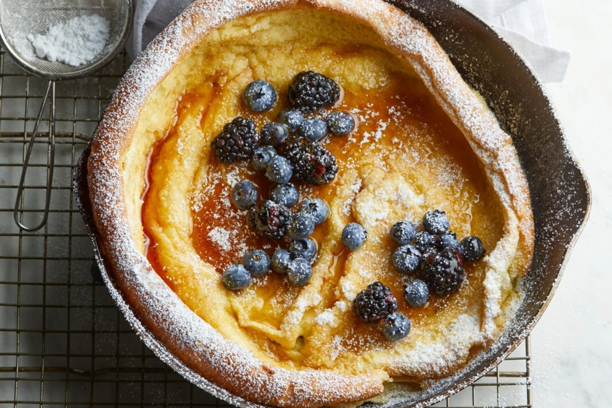

Dutch Baby Pancake

Description
A Dutch Baby pancake is an oven-baked pancake that resembles an oversized popover or Yorkshire pudding.
Typically baked in a skillet, a Dutch Baby pancake is also called a puff pancake, pfannkuchen (German pancake) or nöckerl (Austrian pancake).
Ingredients
- 3 tablespoons butter
- 3 eggs
- ¾ cup milk, room temperature
- ¾ cup flour
- 1 tablespoon sugar
- 2 teaspoons vanilla extract
- 1 pinch salt
- 2 tablespoons confectioners' sugar, or to taste
Steps
- Preheat the oven to 400 degrees F (200 degrees C). Place butter in an ovenproof pan or cast iron skillet and place in the oven.
- Meanwhile, combine eggs and milk in a bowl. Add flour, sugar, vanilla extract, and salt and whisk for 1 minute to remove lumps.
- Remove hot pan from oven and swirl melted butter to coat. Pour batter into the hot pan and return it to the oven.
- Bake in the preheated oven until the pancake is puffed in the center and golden brown on the edges, 20 to 25 minutes.
- Dust with confectioners' sugar and serve immediately.